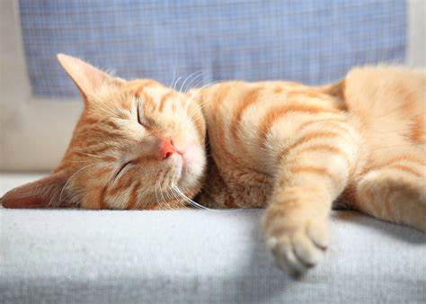
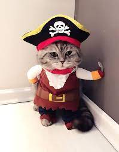
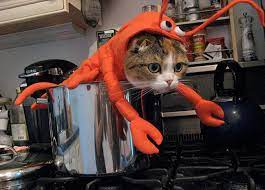

Gatos Para alegrar seu dia :D



Não tem como não se apaixonar por eles
Toda a gente há-de ter notado o gosto que têm os gatos de parar e andar a passear entre os dois batentes de uma porta entreaberta. Quem há aí que não tenha dito a algum gato: «Vamos! Entras ou não entras?» Do mesmo modo, há homens que num incidente entreaberto diante deles, têm tendência para ficar indecisos entre duas resoluções, com o risco de serem esmagados, se o destino fecha repentinamente a aventura. Os prudentes em demasia, apesar de gatos ou porque são gatos, correm algumas vezes maior perigo do que os audaciosos.